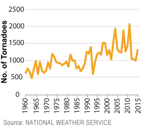
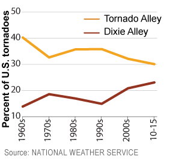

Dixie Alley Most Deadly Tornado Region in America
'Dixie Alley' is used to describe the southeastern states of the U.S. that have seen an increase in the number of tornadoes in recent years. Those states commonly include Alabama, Arkansas, Georgia, Louisiana, Mississippi and Tennessee. According to John P. Gagan of the National Weather Service, the term was coined by former National Severe Storms Forecast Center director Allen Pearson in 1971.
The number of tornadoes in the U.S. spiked to 2,073 in 2011, the first time on record that the 2,000 mark was eclipsed in a calendar year. The states in the so-called ‘Tornado Alley’ - Iowa, Kansas, Nebraska, Oklahoma and Texas - have seen the most twisters in the past 55 years, but Dixie Alley is now demanding the attention of meteorologists across the nation.
No. of U.S. tornadoes quadruple since 1963
The number of tornadoes in the U.S. has steadily risen since 1963 when 493 occurred. However, having peaked with 2,073 in 2011, the number of tornadoes to touch down has since trended downward. At the end of September, 2016, the NWS estimated that there had been 953 tornadoes. Only 2013 had fewer reports over the past 11 years.
Dixie Alley narrowing gap at alarming rate
Can Dixie Alley overtake its neighbor in terms of number of tornadoes in the future? That's hard to say, but nevertheless, its percentage of all U.S tornadoes has increased since 1960 from 14 percent to 23 in 2015. Tornado Alley's percentage has decreased from 40.3 percent to 30.1 over the same period.
